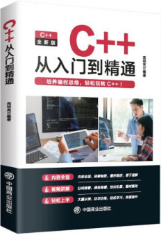

首页 > 书籍下载
《C++从入门到精通》高明亮PDF下载（高清完整版）
|  | 作者：高明亮 |
| 出版时间：2022年03月01日 | |
| 出版社：中国商业出版社 | |
| 书号ISBN：9787520823777 | |
| 总页数：288 | |
| 总字数：40W |
这是一本适合初学者阅读的 C++ 入门书籍，知识点全面，内容图文并茂，案例丰富多彩，适合初学编程的读者以及想提升技术的初级 C++ 程序员。
这里提供的是《C++从入门到精通》高明亮的高清 PDF 下载，内容完整，附带目录标签。
和其它同类的 C++ 书籍不同，这本书先讲解 C 语言，然后再讲解 C++。C++ 是在 C 语言的基础上发展而来的，它在 C 语言的基础上增加了面向对象以及泛型编程机制，学了 C语言就相当于学了 C++ 的一半，从 C语言转向 C++ 时，不需要再从头开始，接着 C语言往下学就可以。
作为一名老程序员，我强烈建议读者先学 C语言，然后再学 C++。没有任何编程基础的读者，我建议先从C语言学起。
书籍目录
- 第1章 C 语言与C++ 语言概述
- 1.1 C 语言概述
- 1.2 从C 语言到C++ 语言
- 1.3 入门的C 程序和C++ 程序
- 1.4 程序开发过程
- 本章习题
- 第2章 数据类型、运算符和表达式
- 2.1 常量与变量
- 2.2 基本数据类型
- 2.3 数据的组合类型
- 2.4 指针
- 2.5 基本运算符和表达式
- 2.6 运算符的级和结合性
- 本章习题
- 第3章 基于面向过程思想的程序设计方法
- 3.1 C 语言数据的输入与输出
- 3.2 顺序结构程序设计
- 3.3 选择结构程序设计
- 3.4 循环结构程序设计
- 3.5 预处理功能
- 3.6 C 语言的文件操作
- 本章习题
- 第4章 函数
- 4.1 函数的声明和定义
- 4.2 函数的形参和实参
- 4.3 函数的返回值
- 4.4 函数的调用
- 4.5 函数指针
- 4.6 函数重载
- 4.7 函数模板
- 本章习题
- 第5章 类和对象
- 5.1 从结构体到类
- 5.2 类的定义以及类的成员
- 5.3 类对象的定义和使用
- 5.4 类的封装性
- 本章习题
- 第6章 深入类和对象
- 6.1 对象的初始化
- 6.2 构造函数
- 6.3 析构函数
- 6.4 调用构造函数和析构函数的时机与顺序
- 6.5 对象数组和指针
- 6.6 对象的动态建立和释放
- 6.7 对象的赋值和复制
- 6.8 静态成员
- 6.9 友元
- 6.10 类模板
- 本章习题
- 第7章 类的继承和派生
- 7.1 继承和派生的概念
- 7.2 派生类的声明方式
- 7.3 派生类的构成
- 7.4 派生类成员的访问属性
- 7.5 派生类的构造函数和析构函数
- 7.6 多重继承
- 7.7 虚基类
- 7.8 基类和派生类的转换关系
- 本章习题
- 第8章 类的多态性
- 8.1 多态性的概念和表现形式
- 8.2 虚函数
- 8.3 纯虚函数与抽象基类
- 8.4 虚析构函数
- 本章习题
- 第9章 运算符重载
- 9.1 运算符重载的含义
- 9.2 运算符重载的规则
- 9.3 运算符重载的方法
- 9.4 重载单目运算符
- 9.5 重载流插入运算符和重载流提取运算符
- 9.6 不同类型间数据的转换
- 本章习题
- 第10章 C++ 的输入/ 输出
- 10.1 标准输入流
- 10.2 标准输出流
- 10.3 文件流与文件操作
- 本章习题
- 第11章 命名空间和异常处理
- 11.1 命名空间
- 11.2 异常处理
- 本章习题
书籍下载
一键登录，免费下载完整版 PDF，文件名称：《C++从入门到精通》高明亮.pdf